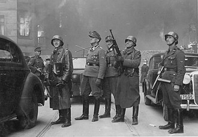
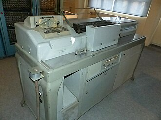

Part IV · Deals & War · Chapter 12
Inherits: Munich → Pact → September 1939 (ch. 11) · Feeds: Pacific & Hiroshima (ch. 13), The 1945–49 order (ch. 14)
The Holocaust
The last chapter ended with Poland divided between two occupying armies. In the German half, exclusion became confinement: in November 1940 the Warsaw ghetto was sealed with more than four hundred thousand people inside it. One of them was a historian. Emanuel Ringelblum ran a clandestine group inside the ghetto — its code name was Oyneg Shabes, because it met on Saturdays — that collected testimony, ration cards, school essays, deportation notices and reports its own members wrote, and buried the collection in metal boxes and two milk cans. Ringelblum was found in a hiding place outside the ghetto wall in March 1944 and shot. Part of the archive was dug out of the rubble in 1946 and part in 1950; a third cache has never been found. The papers, and one of the cans, are in Warsaw at the Jewish Historical Institute.

On 20 January 1942, in a requisitioned villa on the Wannsee outside Berlin, fifteen men from ministries, the party and the security police sit down for about ninety minutes. By that morning the shooting of Jewish communities behind the eastern front has been running for seven months and the first killings with gas have begun at Chełmno; the meeting is not where the murder starts, it is where it is coordinated. Thirty copies of the minutes are typed. One is found in 1947, in the files of the German Foreign Office. Six classrooms describe what those men were coordinating. Two others cover this continent and this period and say nothing at all.
The six agree on the crime and on its scale. What they do not agree about is how many people a sentence describing it needs in it.
Who murdered the Jews of Europe — and how many people does your textbook put into that sentence?
1 What happened
- April 1933: the first German laws excluding Jews from the civil service. 1935: the Nuremberg Laws.
- 9–10 November 1938: coordinated attacks across Germany and annexed Austria. Synagogues burned, Jewish-owned shops wrecked, roughly 30,000 Jewish men arrested and sent to concentration camps.
- September 1939: Germany invades Poland, which holds the largest Jewish population in Europe. Ghettos follow through 1940–41.
- 22 June 1941: the invasion of the Soviet Union. Four Einsatzgruppen of the SS and police, together with police battalions and local auxiliaries, shoot Jewish communities behind the front. On 29–30 September 1941, at the Babi Yar ravine outside Kyiv, the killers’ own report records 33,771 Jews shot in two days.
- Babi Yar was used for further killings until 1943, and estimates for the whole site over the occupation run well above the two-day figure.
- December 1941: first systematic killing with gas at Chełmno. 20 January 1942: the Wannsee Conference. During 1942 Bełżec, Sobibór and Treblinka begin operating; Auschwitz-Birkenau receives transports from across Europe.
- 27 January 1945: Soviet troops reach Auschwitz. April 1945: British and American troops reach Bergen-Belsen and Buchenwald.
- Scholarly estimates of the Jewish dead cluster around six million; the range in the literature runs roughly 5.6 to 6 million. Roma and Sinti, disabled people, Soviet prisoners of war, Poles, and others were killed under related policies.
2 The sentence that does the killing
Six narrators, grouped by what kind of thing acts in the sentence: an abstract policy, a concentrated responsibility at the top, or a responsibility distributed across units, armies and offices. These are not exact rungs on one ladder — the passages are unlike each other, and one of them is staging a historians’ argument rather than making a statement.
One caution before the table. The German column is not a school textbook. It is Informationen zur politischen Bildung No. 316, a booklet issued by the Federal Agency for Civic Education and written by a historian, and the whole booklet is about this. Comparing its page count to a chapter in a world survey measures the genre, not the classroom. What can be compared is the grammar.
| Classroom | The sentence | Who is in it |
|---|---|---|
| Abstract or passive action | ||
| RU · Чубарьян 2023 |
«В результате целенаправленной политики уничтожения евреев, получившей название „холокост“, погибло около 6 млн человек.» “As a result of a targeted policy of the destruction of the Jews, which received the name ‘holocaust,’ about 6 million people perished.” |
A policy destroys; at the pit, nobody shoots |
| UA · Гісем–Мартинюк 2019 |
«У роки Другої світової війни від рук нацистів загинуло 6 млн євреїв. Трагедія європейського єврейства спонукала до активізації сіоністського руху, який розвивався під гаслом „Тільки у власній державі єврейський народ може почуватися в безпеці“.» “In the years of the Second World War, 6 million Jews perished at the hands of the Nazis. The tragedy of European Jewry prompted the activation of the Zionist movement, which developed under the slogan ‘Only in its own state can the Jewish people feel safe.’” Всесвітня історія, 11 кл. (2019) · p. 138, opening the section on the founding of Israel |
An agent in a prepositional phrase, and the sentence moves on |
| Concentrated responsibility | ||
| IT · Sabbatucci–Vidotto 2004 |
«La “soluzione finale” del problema ebraico, progettata e avviata da Hitler a partire dal ’41 e affidata principalmente alle cure delle SS, prevedeva infatti la pura e semplice eliminazione fisica degli ebrei. Fra i 5 e i 6 milioni di israeliti — provenienti da ogni parte d’Europa, ma per la maggior parte polacchi e russi — scomparvero così negli anni della guerra.» “The ‘final solution’ of the Jewish problem, projected and set in motion by Hitler from ’41 and entrusted principally to the care of the SS, provided in fact for the pure and simple physical elimination of the Jews. Between 5 and 6 million Israelites — coming from every part of Europe, but for the greater part Poles and Russians — thus disappeared in the years of the war.” Il mondo contemporaneo, Laterza 2004 · p. 478 |
One man projected it; the SS were handed it |
| UK · Lowe 2013 |
“Intentionalists – historians who believed that responsibility for the Holocaust rests on Hitler, who had hoped and planned to exterminate the Jews ever since he came to power. |
Two schools of historians, then a verdict on one man |
| Distributed responsibility | ||
| US · OpenStax 2022 |
“Special execution squads called the Einsatzgruppen (‘operational groups’) followed the advancing German troops, killing enemies and undesirables—largely Jewish people.” |
Named units, then tens of thousands of collaborators |
| DE · bpb Nr. 316, 2012 |
„Dabei geschah der Holocaust nicht auf alleinige Entscheidung Hitlers. Vielmehr radikalisierte sich die Gewalt gegen die Juden in Europa vor allem im Zuge des Vernichtungskriegs gegen die Sowjetunion ab 1941 zunehmend und mündete schließlich in die systematische Deportation und Ermordung der europäischen Juden in den Vernichtungsstätten im Osten: Auschwitz, Treblinka, Sobibór, Bełżec und andere.“ “In this, the Holocaust did not happen on Hitler’s sole decision. Rather the violence against the Jews in Europe radicalised itself increasingly, above all in the course of the war of annihilation against the Soviet Union from 1941, and issued finally in the systematic deportation and murder of the European Jews at the annihilation sites in the East: Auschwitz, Treblinka, Sobibór, Bełżec and others.” |
Not Hitler alone — and the soldiers were there |
3 The widening circle
All six identify the systematic murder of the European Jews, and all six put the Jewish dead at roughly five to six million or a little above. This chapter is not about denial. Where the six do come apart on facts, they say so out loud — the Babi Yar counts do not match, the boundaries of the victim categories move from book to book, and one of them tells the student that the camp totals may never be known. The larger disagreement is grammatical, and it decides how much of Europe a reader is asked to hold responsible.
One name measures it. In Lowe’s section 6.8, seven printed pages long, the word “Hitler” appears forty times. In OpenStax’s three-page Holocaust section it appears not once. In the German booklet’s Holocaust chapter it appears sixteen times, alongside at least fifteen other named organisers.
Those three counts are three theories. Lowe concentrates causation at the top and teaches the argument about it: intentionalists against functionalists, staged as a live dispute, then closed with Kershaw’s verdict that Hitler’s role was “decisive and indispensable.” That is a real service to a sixteen-year-old, and the cost is that everything below Hitler stays out of focus. OpenStax describes machinery in operation — the squads, the ghettos, the railway lines, the conference, “the collaboration of tens of thousands of people from across Europe” — and the man at the top never has to be argued about, because he is not in the paragraph. The German booklet is the only one that holds both in the same frame: it refuses the single decision in its opening pages and then fills the following forty with the people who carried it, which is why its Hitler count and its everybody-else count are both high.
The clearest place to watch the circle widen is a single ravine on two days at the end of September 1941. Lowe: “in two days at the end of September 1941, some 34 000 Jews were murdered in a ravine at Babi Yar, on the outskirts of Kiev in Ukraine.” Chubaryan: “After the taking of Kyiv, in the area of Babi Yar about 70 thousand Jews were shot.” Both are passive; in neither does anyone hold a weapon. The German booklet names the units in the sentence itself — “more than 33,000 people were shot by SS and police” — and then, in the caption under its photograph of the ravine, drops the passive altogether: “In the ravine of Babi Yar near Kyiv, SS and police shoot more than 33,000 people on 29/30 September 1941.” The three numbers are not the same number, and the reason is a counting window rather than a dispute about what happened; that belongs in the limits below. The grammar is the finding. Two classrooms describe a killing. One describes killers.
Widen it one more step, and the German booklet is again the one that goes furthest, against its own interest: „Deutsche Soldaten beteiligten sich an den Mordtaten gegen die Zivilbevölkerung, sicherten die Erschießungsstätten ab, brannten ganze Dörfer nieder…“ — “German soldiers took part in the killings of the civilian population, secured the shooting sites, burned whole villages down…” Not the SS, not a special unit: soldiers, the ordinary army, the men in the family photographs. OpenStax reaches a comparable size by a different route, counting not Germans but participants — “tens of thousands of people from across Europe.” Furthest the other way, the Ukrainian volume names the Nazis once, in a prepositional phrase, and moves on to the founding of Israel; in that chapter the murder’s job is to explain why a state was needed.
The circle has a limit, and two of the books walk straight into it. Chubaryan writes: «Фабриками смерти стали концентрационные лагеря (Аушвиц (Освенцим), Треблинка, Майданек и др.)» — “The concentration camps became factories of death (Auschwitz (Oświęcim), Treblinka, Majdanek and others).” The German booklet spends a paragraph on that exact image.
“The probably least fitting metaphor for the annihilation camps is that of the ‘death factory.’ However industrial the procedure of killing in the gas chambers may appear, one cog here meshed very little with the next. […] The notion of a ‘death factory,’ of the frictionless interlocking of many parts of one large machine, veils the actual, brutal events and relieves the imagination of having to hold the unimaginable in front of it.”
DE · Informationen zur politischen Bildung Nr. 316 (2012) · p. 47One classroom reaches for the machine because it makes the scale sayable in a single line. The other refuses the machine because a machine has no hands in it.
4 The paperwork
Hands had card indexes. In Berlin the office of Albert Speer, acting as building inspector for the capital and expecting apartments to fall vacant, drew up lists of Jewish tenants „aus seiner Gesamtkartei“, out of its master card index, and handed them to the Gestapo. One office, one drawer, a list of names, a delivery. That sentence is in the German booklet, and it is the only sentence in any of these classrooms that shows the layer between a policy and a person.
The scale on which the murder was planned rested on that layer everywhere. Three of the classrooms hand the reader a size. OpenStax: the policies required “the collaboration of tens of thousands of people from across Europe.” Lowe, on Wannsee: the men met to discuss “the logistics of how to remove up to 11 million Jews from their homes in all parts of Europe and transport them into the occupied territories.” The German booklet prints the same figure and is the only one that says where it came from — Heydrich gave it „nach den überhöhten statistischen Vorlagen Eichmanns“, on Eichmann’s inflated statistical submissions — and notes that the country list attached to it included Ireland, Portugal, Spain, England, Sweden, Switzerland and Turkey, states not under German control. A total of that kind is not reached in a meeting. It is assembled beforehand, country by country, out of records.
Part of the record for Germany itself was a census. The census of 16 June 1933 recorded religious affiliation. The census of 17 May 1939 carried a supplementary card asking whether each of a person’s four grandparents was Jewish by descent — a different question, which produces a different list. Both were tabulated on punch-card machines of the type patented by Herman Hollerith for the American census of 1890: a card with holes punched in coded positions, read, sorted and counted mechanically. The machines in Germany were supplied and serviced by Dehomag, the Deutsche Hollerith-Maschinen Gesellschaft. Hollerith installations are also documented inside the SS economic administration and in the labour-deployment offices of the camp system.

The causal statement has to be made at exactly its own size. The machines did not cause the murders, and nothing in the documented record shows them to have been necessary to it; a great deal of the work was done with typed lists and card drawers, as in Speer’s office. What the census layer removed was anonymity. After 17 May 1939, a person’s descent was not something a neighbour might or might not know. It was a fact of record, held by name and address, on a form the person had filled in.
No classroom describes how a continental total was assembled. One comes close — the German booklet, with Eichmann’s statistics behind Heydrich’s eleven million and a building office pulling names from a card index. Every classroom that teaches this event teaches the scale. The paperwork the scale required is one sentence, in one book, about apartments in Berlin.
Ringelblum’s group built the opposite archive out of the same materials. Oyneg Shabes collected names, addresses, ration cards, deportation notices — the categories an occupation office also kept — and buried them so that the people in them could not be subtracted quietly. The same paper does both jobs. A record that a person exists at an address is the thing that can find them and the thing that can keep them; nothing in the form decides which, and the person filling it in does not get to choose.
That is where this reaches the present, and it reaches it as a capacity rather than a warning. Nothing about a database leads to a murder. But a census form still arrives at the address where you live — in most of the countries in this book about once a decade, and in most of them answering is required by law. It asks the household, the language spoken at home, sometimes religion, sometimes ethnicity or descent under whatever word the decade is using; and its answers are joined afterwards to records gathered separately, for other reasons, by people who were not asked. The categories were chosen years before anyone knew what the answers would be used for. Whoever fills it in is not being warned about anything. They are becoming countable, by name and address, in a way a neighbour’s guess never could be — and that is what the supplementary card of 1939 shows, narrower and harder to put down than a lesson: the question printed on a form decides what can be counted later, and by whom.
5 Credit where due
Fairness, paid in installments
bpb Nr. 316 (DE) takes the credit line, and the reason is narrower than “it is German and therefore contrite.” It is the only text here that treats the size of the perpetrator group as a historical question and answers it against its own interest: not Hitler’s decision alone; ministries and bureaucracy coordinating; the French police assisting the first deportation train out of Compiègne; a building office handing names to the Gestapo; and one plain sentence — German soldiers took part. It is also the only text that inspects its own vocabulary in public, both when it decodes the Wannsee minutes (“the parallelisation of the line of approach — that is, they came to an understanding about murder”) and when it refuses the death-factory image. Distance did not buy that candour; proximity plus a mandate did. Three shorter debts. Sabbatucci–Vidotto (IT) is the only book in the corpus that stops to argue about the name — that “holocaust” means a sacrifice and is therefore improper, that Jews prefer shoah — and then declines to flatten the other mass killings on its page into the same thing. Lowe (UK) and OpenStax (US) hold opposite pedagogical virtues at the two ends of this chapter’s question: Lowe hands a schoolchild a historiographical dispute instead of a conclusion, and names the deniers’ three claims in order to answer them; OpenStax is the only column that admits its own numbers are contested — “Historians disagree about how many died in the camps, and the true number will likely never be known.”
6 Where this stops being true
Limits
The German column is not a school textbook and must not be read as one; everything above is a claim about its grammar and its named agents, not about how much room it gives the topic. And this shelf is narrower than the world. Kazakhstan’s volume is a national history and does not stand beside these six, and the Chinese and Sudanese syllabuses stop short of the subject altogether.
Two books that cover this continent and this period carry nothing on it, and neither silence is a verdict on a country. The Belarusian world-history volume contains no Holocaust, no camps, no ghetto, no Babi Yar and — outside one false positive inside the word вневременность — no Jews; it defines «Геноци́д» in its glossary and never attaches the word to an event. But the volume pinned here is «Всемирная история» for grade 11, and whether the Belarusian national-history volume names the Minsk ghetto is a question this shelf cannot answer. The same caution, more strongly, for India: NCERT’s Themes in World History, Class XI, has no Holocaust, no Auschwitz, no Wannsee, no six million — and the subject is taught in a different NCERT book, the Class IX chapter “Nazism and the Rise of Hitler,” which is outside this corpus. A silence in a pinned edition is evidence about that edition and nothing more, until the rest of the shelf is read.
The Babi Yar numbers are not reconciled here and should not be reconciled by us. Thirty-three to thirty-four thousand is a two-day figure, close to identical in the British and German books because both are downstream of the killers’ own operational report, which recorded 33,771. The Russian sentence gives no dates — “after the taking of Kyiv” — and the ravine kept being used until 1943; estimates for the whole site run far above the two-day count, and in most reconstructions include people who were not Jewish. Until someone reads Chubaryan’s sourcing, the honest statement is that the sentences count different things, not that one of them is wrong.
The paperwork section stops short of a well-known stronger story on purpose. The claims that specific hole positions coded “Jew,” that tabulators stood at railway hubs directing deportation traffic, and that the numbers tattooed at Auschwitz were Hollerith numbers come substantially from one book, Edwin Black’s IBM and the Holocaust (2001), and historians of the SS administration have disputed both the coding specifics and the operational role it assigns to the machines. Dehomag was a subsidiary of the American firm IBM, and the ownership history is documented; this chapter rests nothing on it. What the cited evidence establishes is which censuses gathered which categories, and that Hollerith equipment was used to tabulate them and was installed in named SS offices — not that the equipment was necessary, and not what any individual machine did.
The name counts in section 3 were taken from text extractions, and a printed page can overturn them. And none of these six books is a history of the Holocaust as it was lived. Warsaw is in this chapter because a historian buried his archive there, not because any column here contains it. If you want Warsaw, Vilna, Salonica or Amsterdam from inside, all six will leave you with a number and a map.
7 Receipts
- DE — Michael Wildt, Nationalsozialismus: Krieg und Holocaust, Informationen zur politischen Bildung Nr. 316 (Bundeszentrale für politische Bildung, 2012): “nicht auf alleinige Entscheidung Hitlers,” p. 4; Babi Yar, the Wehrmacht rhyme, German soldiers and Generalplan Ost, p. 29; chapter “Massenmord und Holocaust” opens p. 33; Wannsee, the eleven million and Eichmann’s statistics, pp. 42–43; Auschwitz-Birkenau ramp and the “Todesfabrik” paragraph, p. 47; the pogrom of 1938 in memory, p. 77. Named organisers in the Holocaust chapter, beyond Hitler: Himmler, Heydrich, Eichmann, Göring, Globocnik, Jeckeln, Greiser, Hans Frank, Stuckart, Freisler, Neumann, Luther, Müller, Bouhler, Brandt.
- US — OpenStax, World History, Volume 2: from 1400 (2022): Kristallnacht p. 530; §13.2 “The Holocaust,” pp. 544–546 — Einsatzgruppen and the Ohlendorf testimony pp. 544–545, Wannsee and Auschwitz p. 546, “tens of thousands of people from across Europe” and the admission that historians disagree, p. 546. Named perpetrators in the section: Goebbels, Himmler, Eichmann, Otto Ohlendorf; Hitler does not appear in it.
- UK — Norman Lowe, Mastering Modern World History, 5th ed. (Palgrave Macmillan 2013): §6.8 “The Holocaust,” index range pp. 111–17; Majdanek and the 5.7 million figure at the section opening; intentionalists and functionalists; Wannsee and the Kershaw quotation; Babi Yar and Odessa in §6.6’s occupation pages; the passage on deniers. Map 6.7 “The Holocaust.”
- IT — G. Sabbatucci & V. Vidotto, Il mondo contemporaneo (Laterza 2004): the “notte dei cristalli” and Hitler’s “progetto mostruoso,” p. 397; ghettos, yellow star, camps, gas chambers and the “soluzione finale” with the 5–6 million figure, p. 478; the uniqueness debate, shoah, and the argument against loose use of “genocidio,” p. 480.
- RU — А. О. Чубарьян, Всеобщая история. Новейшая история 1914–1945 гг., 10 кл. (Просвещение 2023): the pogrom of 9–10 November 1938 with the marks figure and the second name, p. 93; Babi Yar, p. 170; “holocaust,” genocide of the Slavic peoples and the “factories of death,” pp. 192–193; “(holocaust, genocide)” in the casualties section, p. 201; glossary entry «Холокост», p. 216.
- UA — О. Гісем, О. Мартинюк, Всесвітня історія, 11 кл. (2019): Orbán’s apology in the Knesset and “the destruction of Jewry by the Nazis and their accomplices,” p. 107; “6 million Jews perished at the hands of the Nazis,” p. 138, opening the founding of Israel.
- A note on names. Four of the six use the name that came out of the broken shop windows — Kristallnacht in Lowe, Kristallnacht glossed as “the ‘Night of Broken Glass’” in OpenStax, notte dei cristalli in Sabbatucci–Vidotto, «Хрустальная ночь» in Chubaryan. The Russian book alone prints a second name and the arithmetic that produced it: «В ходе погрома было разрушено 267 синагог и свыше 800 магазинов. Ущерб только от разбитых витрин составил 5 млн марок. С этим связано другое название этого события — „Ночь разбитых витрин“. Более 20 тыс. евреев были брошены в концентрационные лагеря.» — “In the course of the pogrom 267 synagogues and over 800 shops were destroyed. The damage from the broken shop windows alone came to 5 million marks. Connected with this is another name for the event — ‘Night of Broken Shop Windows.’ More than 20 thousand Jews were thrown into concentration camps.” (p. 93.) The German booklet does not use the word at all; its period starts with the war, and both times it refers back it writes der Pogrom 1938. One more noun is worth recording: at Babi Yar the Russian and British books write “Jews,” and the German booklet, twice, writes „Menschen“ — people — although two sentences earlier on the same page it counts “over 26,000 Jews” at Kamenets-Podolsk. Chubaryan’s own vocabulary loosens across its volume: a tight glossary entry (“Holocaust — the targeted policy of Nazi Germany, its allies and accomplices in the persecution and destruction of the Jews”), and, a hundred pages after the Holocaust section, “The fascists carried out a policy of the deliberate destruction of whole peoples (holocaust, genocide),” where no people is named.
- BY — В. С. Кошелев и др., Всемирная история, 11 кл. (БГУ 2021): Plan “Ost” and the Slavic population “to be reduced,” pp. 157–158; the Nazi party programme’s “anti-Semitic and patriotic slogans,” p. 129; glossary «Геноци́д», p. 254. 0 mentions stems searched in the original, accents stripped: холокост · Освенц- · Аушвиц · Треблин- · Ванзе · гетто · геноцид (as an applied term) · Шоа (one hit: князь Шоа, Menelik of Shewa) · Хрустальн- (one hit: Хрустальный дворец) · Бабь- · евре- (one hit, inside вневременность) · иуде- · концлагер- · истребл-. English discovery file: Holocaust · Auschwitz · Treblinka · Wannsee · Final Solution · Jew/Jewish · ghetto · gas chamber · Kristallnacht · Babi Yar · Shoah — all zero.
- IN — NCERT, Themes in World History, Class XI (post-2022 rationalised). 0 mentions stems searched: Holocaust · Auschwitz · Treblinka · Wannsee · Final Solution · Kristallnacht · gas chamber · six million · ghetto · extermination camp — all zero. “Genocide” once, on settler colonisation in North America and Australia. “Jews” once, in the 1917 Balfour entry; “Jewish” only in Roman antiquity. “Hitler” once, in a timeline: “Hitler captures power in Germany (1933).”
- 0 in-scope CN (中外历史纲要 上 — national history; 大屠杀 refers to Nanjing) · SD (syllabus 1821–1948, regional; Nazism appears once, as a driver of migration to Palestine, printed p. 232, with immigration rising from 9,533 in 1932 to 61,854 in 1935) · KZ (national history — not a world-history column; its occupation pages say “the fascists proceeded to the planned extermination of the Soviet people,” p. 201, and it prints the reichskommissariat map in more detail than any world-history book here).
- The administrative layer. In the corpus: zero of eleven classrooms describe how a continental total was assembled. Stems searched in the originals across all eleven: Hollerith · Lochkart- / punch card / перфокарт- · Dehomag / Дехомаг · Volkszählung / census / censimento / перепись / перепис · Ergänzungskarte · Kartei / card index — all zero, and no mention of the German censuses of 1933 or 1939 anywhere. The nearest approach is DE (bpb Nr. 316): Heydrich’s eleven million „nach den überhöhten statistischen Vorlagen Eichmanns“, pp. 42–43, and the Speer building office supplying Jewish tenants’ names „aus seiner Gesamtkartei“ to the Gestapo.
- Who covers the topic at all. In the corpus: six of eleven classrooms describe the murder of the European Jews (DE, IT, RU, UA, UK, US); two that cover this continent and this period contain nothing on it (BY, IN); three are out of scope as world-history columns (CN, KZ, SD). See the two zeros in the limits above.
- The IBM literature. Edwin Black, IBM and the Holocaust (2001), and the critical reviews that answer it, are where a reader should start on the machines — the reviews first. For the census layer independent of that argument: Götz Aly and Karl Heinz Roth, Die restlose Erfassung (1984; English The Nazi Census, 2004).
- Method. Machine translation was used for discovery only. Every non-English line above was pulled from the original-language extraction, joined across line breaks and hyphenation, and hand-translated here. Page numbers follow the extractions and the dossiers. Research maps:
notes/holocaust.md,notes/occupation-east.md.
Here a person was made countable by name and address, one at a time, and it took offices and hands to do it. The next chapter opens where a city has become the unit of counting, and where a single named wartime decision — its necessity, its purpose — is still disputed.
Now look up what your textbook calls it.